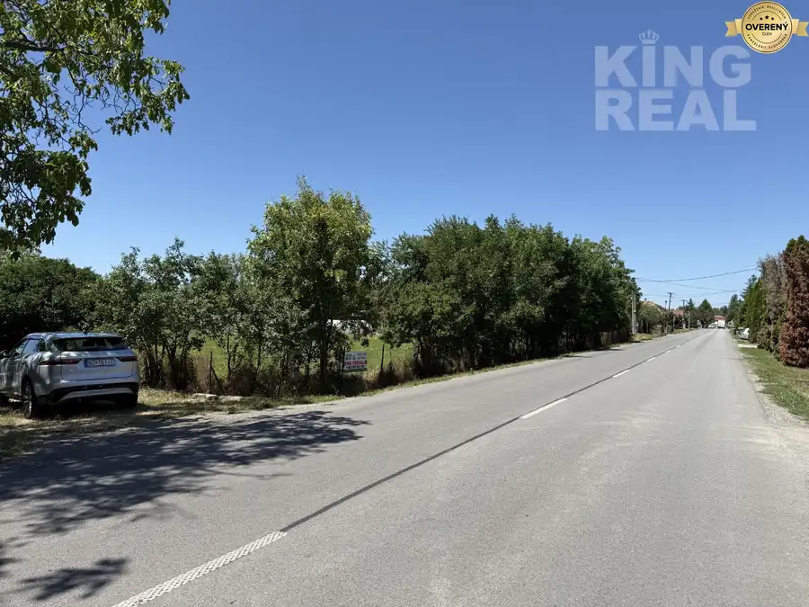
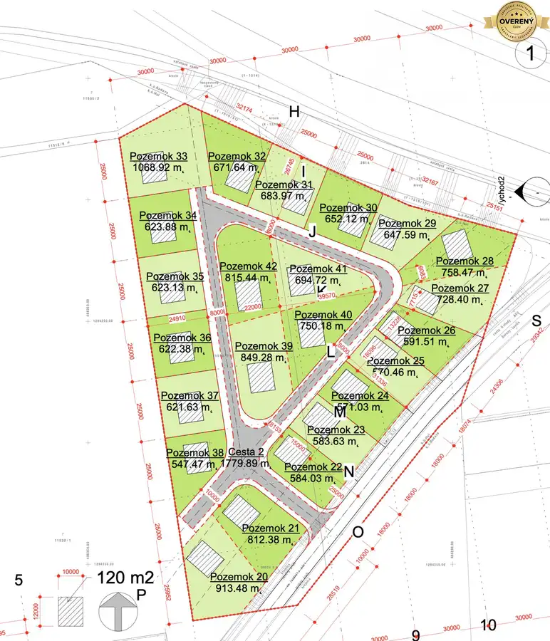
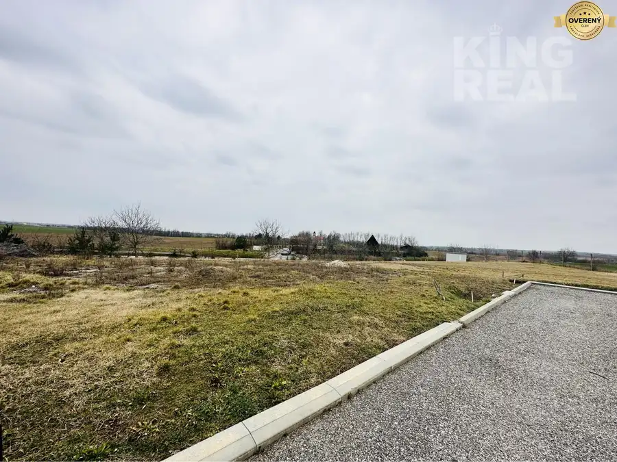

Pozemok Šurany – časť Nitriansky Hrádok – nová ulica
Šurany
- Plocha605 m²
- Vlastníctvoosobné
O nehnuteľnosti
Mgr. DAVID MOLNÁR RSc. z KING REAL ponúka exkluzívne na predaj možnosť bývania alebo investovania do nehnuteľnosti vo vyhľadávanej lokalite na novovzniknutej ulici v Šuranoch, v mestskej časti Nitriansky Hrádok.
Lokalita spája výhody bývania v meste s plnou občianskou vybavenosťou a pokojného vidieckeho prostredia. Rovnako v bezprostrednej blískoti sa nachádza autobusová zastávka. Nitriansky Hrádok je vzdialený 11 km od okresného mesta Nové Zámky.
Pozemky sú rovinaté, slnečné s výbornou orientáciou. V cene pozemku je zahrnutá elektrická prípojka, vodovodná prípojka a optický internet.
Lokalita má bohatú históriu, je nazývaná aj Slovenská Trója. Mestská časť je známa rybolovom na miestnom rybníku Mederčina kde sa uskutočňuje počas roka aj viacero podujatí. Priamo v mestskej časti sa nachádza materská škola, potraviny, pohostinstvo, kostol, posilovňa, kultúrne stredisko.
Videoprezentácia: https://lnk.sk/vyc3
TU KLIKNI PRE STIAHNUTIE-----> ZASTAVACIA ŠTÚDIA
Odkaz na web projektu:
WEB PROJEKTU ŠURANY POZEMKY
https://pozemky-surany.sk
POSLEDNÉ VOĽNÉ POZEMKY NA PREDAJ (vždy aktualizované):
Pozemok 4: parcelné č.: 378/4, výmera v m2- 605 - cena je 55.990eur.
Pozemok 12: parcelné č.: 378/10, výmera v m2- 620 – REZERVOVANÉ.
Pozemok 13: parcelné č.: 378/9, výmera v m2- 604 - REZERVOVANÉ.
Pozemok 16: parcelné č.: 392/7, výmera v m2- 762 - REZERVOVANÉ.
Pozemok 17: parcelné č.: 392/6, výmera v m2- 649 - REZERVOVANÉ.
Pozemok 18: parcelné č.: 378/15, výmera v m2- 649 - REZERVOVANÉ.
Pozemok 19: parcelné č.: 378/14, výmera v m2- 715 - REZERVOVANÉ.
V cene je zahrnutá provízia + právny servis, taktiež možnosť sprostredkovania hypotekárneho úveru.
V prípade záujmu ma kontaktujte kedykoľvek aj do 23:00.
Mgr. David Molnár RSc.
TU KLIKNI PRE STIAHNUTIE-----> ZASTAVACIA ŠTÚDIA
Parametre
| Rozloha pozemku | 605 m² |
|---|---|
| Vlastníctvo | osobné |
| Plyn | nie |
| Inžinierske siete | áno |
| Dátum zverejnenia | 9. 10. 2025 |
Kde to je
Mohlo by Vás zaujímať

Pozemok8 63 000 €Pozemok na predaj – Komoča | 1 294 m² | 63 000 € Komoča 1294 m² Ponúkame Vám na predaj priestranný pozemok o výmere 1 294 m², nachádzajúci sa na začiatku obce Komoča (okres Nové Zámky), v príjemnej lokalite s…
Pozemok4 220 000 €Investičný pozemok Hul / radava v blízkosti Podhájska Hul 39929 m² Mgr. David Molnár RSc. z KING REAL Vám exkluzívne ponúka na predaj pozemok v obci HUL, avšak na hranici s obcou RADAVA o výmere 39.929 m2. K pozemku…
Pozemok 31 990 €Pozemok na predaj Radava Radava 702 m² Mgr. David Molnár z KING REAL Vám exkluzívne ponúka na predaj pozemok v obci RADAVA o výmere 702 m2. Pozemok je slnečný s výbornou orientáciou.…